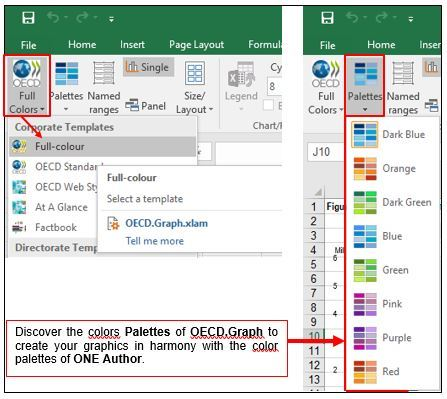
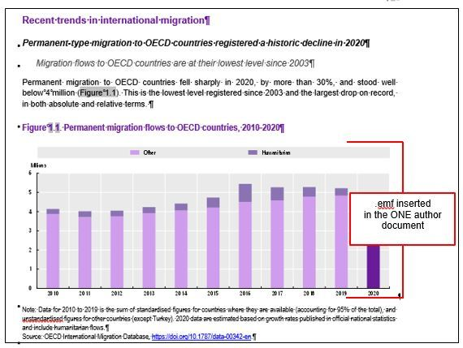

1. Key steps to start formatting a document
This section contextualises the work with O.N.E Author and includes the main features to be used while drafting your manuscript.
1.1. Recommendations for setting up Word in order to format content with O.N.E Author
For optimal ease of use and to save time, configure Word before starting the publication see video Customising the Quick Access Toolbar.
It is recommended to display the paragraph marks (tab Home/ ) to structure your document.
) to structure your document.
View and control publication styles
1Display the area pane in Draft view to see styles applied in your Word document.
Go to: File/Options/Advanced/Display
Increase the width of: Style area pane width in Draft and Outline views (here 2.01 cm).
2Go to View tab within Word and activate Navigation Pane.
3Go to View and activate Draft.
4To return to a normal view (Print Layout).
1.2. ONE Author ODPub template format
ONE Author ODPub uses a single model template. It aims to produce a central structure that covers official documents, publications, working documents, etc. – and allows easier maintenance, while being coherent, facilitating writing, revisions and processing in digital workflows.
Using the same structured template for official documents and publications prevents the need for conversion and reformatting, reduces errors and provides a core structure for multiple outputs and channels (see Sample ONE Author ODPub
Arial and Arial Narrow fonts are used
The format is 21 x 28 cm template in an A4 format.
Content width max = 16.4 cm
Content height = 23.4 cm
Margins
Top = 3.2 cm
Bottom = 3.1 cm
Left = 2.3 cm
Right = 2.3 cm
Tip
It is very important not to go beyond the maximum content size. Objects larger than the content width and height may be cropped on printed or digital outputs.
1.3. Getting started in O.N.E Author
Tips
Read the Getting Started
If working with external contributors consult: _ESSENTIALS: Working with external contributors
More information for to produce a publication with O.N.E Author is available on:
You will need to
1Configure Word for O.N.E Author, see Section 1.1.
2Refer to the OECD Style Guide
3For the co-edition, please contact PACRights&Risks@oecd.org
4Have by your side the Quick Reference Guide
5Know whether you will work with one file for all chapters or multiple files, see Section 1.11.
6Create a Table of contents, see Section 3.5.
7Understand where you can find the styles in O.N.E Author, see Section 1.8.
8Know how and where place Abbreviations and Acronyms (Section 3.8), Glossary and Definitions (Section 5.2) should be tagged and placed within the manuscript.
9Manage multiple landscape pages (see Section 2.11).
10Understand the different image formats, their quality and dimensions see Section 6.4.3.
11Insert Infographics (Section 6.5), In Briefs boxes (Section 4.3), Key Boxes (Section 4.4), Tables (Section 6.3), Figures (Section 6.4), Boxes (Section 6.1) and StatLinks (Section 2.6) in your layout.
12Know how to manage References for the Chapter, see Section Error! Reference source not found..
13Understand the submission process to PAC, see Chapter 7.
Additional topics you might need
Applying the correct styles, see Section 1.8.
Removing paragraph numbering from official documents, see Section 2.1.
Managing hyperlinks (active links), see Section 2.5.
Semantic tagging and content enrichment, see Section 1.10.
Managing special characters, see Section 2.8.
Template format values, see Section 1.2.
Using the O.N.E Author Checklist for valid XML
Remember
The following tips are useful to avoid errors often encountered that impact the digital dissemination of the files:
Do not include a note in an abstract or a title.
No changes have been made to the automatic numbering field.
Paragraph mark (Enter) and line return (Shift+Enter) are often misused: Line return is replaced by a space in ePub/Webbook. You should use the line return in a title, for example, and not a paragraph mark otherwise you will have 2 titles in ePub/Webbook.
Multiple spaces should not be inserted to align or center a text.
To insert a Page Break or Section Break, use the Para style.
To arrange the layout, add space (tab Home/Paragraph/Spacing or tab Layout/Spacing) or multiple paragraphs in Para style.
Page Break or Section Break should not be used in cells (boxes and tables). We recommend you to insert empty paragraphs to manage the layout.
A paragraph should not contain Boxes, Figures or Tables. Those need to be placed after the paragraphs.
All links should contain http:// or https:// to have a valid link and they should be activated.
1.4. Adapting your document to the O.N.E Author publication template
It is important to follow the _ESSENTIALS: Best practices for multi-chapter documents
Starting point cases:
1You start with an official document containing numbered paragraphs that need to be converted to unnumbered paragraphs (Section 2.1) see as well: How to transform an Official Document to a Publication
2You start a new document:
a.From Word create a new file. File/New/Shared tab. Pin the ONE Author ODPub template to make it appear every time you open Word. Click on the template.
Whether you start a new document or start from an existing document you will need to change it to use a template for publications see _ESSENTIALS: Cover page
In order to convert it into the publication template insert the _OECD Publication cover page:
Go to the Insert tab on the menu.
Select the sub menu Cover Page.
Select the _OECD Publication cover in English or French.
For third languages see:
1.5. Cover Page
1The Cover Page contains content controls for metadata such as series; the title and the subtitle. It is essential to keep these content controls, even empty.
2Make sure your publication title is the same as catalogued in Kappa
3For co-editions, check the copyright agreement and adjust the copyright in the footer manually after having run the Quality Checks. Bear in mind that each time you’ll run the Quality Checks, any text added manually in the footer will be removed. It’s then important to make the change at the very end of the process.
4Run the Quality Checks to update footers.
Warning
When you insert the Title in the “Document Title” field of the cover Page, do not leave a space before the shift-return, it creates a double space in the title in the footer.
1.6. Choosing a numbering for the publication
Go to the Multilevel List library and choose one of the predefined list. Make sure to choose the right language. For more information, see guidelines _ESSENTIALS: Heading numbering
Warning
It is important to choose the Multilevel List corresponding to the language used in your publication. For example, the spelling of the word Annex in the automatic numbering of Annexes: Annex 1A (English) and Annexe 1.A (French). Use the numbering for the publications, see _ESSENTIALS: Heading numbering
1.7. Choosing one colour per publication
Available under Design/Colors.
For graphs, it’s recommended you align the color scheme of your figures in OECD.Graph with your O.N.E Author Themes Colors applied. This way, you’ll keep consistency of the colours throughout the whole layout.
1Open your OECD.Graph
2Select the Full Colors template

Graph obtained with OECD.Graph (Purple color scheme)
O.N.E Author with Color OECD-Purple applied

1.8. Applying style settings
In this section we describe the different methods to display and apply the correct styles.
Option 1
To use the main shortcuts go to the O.N.E Author tab. From this tab, you have access to the Quick Reference Guide

Option 2
Access styles on the Word ribbon:
1. Go to Home
2. Go to Styles section
3. Click on the bottom arrow to display the full list.
Option 3
Display all styles in the template.
1Open the Styles panel (Alt + Ctrl + Shift + S).
2Quickly check and clean the list of applied styles
The styles applied in your document must be the default O.N.E Author styles and not styles inherited from other documents.
To check your document, display View/Draft and list of styles. In the panel Styles, tick Options/Select styles to show: In Use. See also The Quality Checks indicate that there are incorrect styles in the document. What should I do?
aThis following list of styles are some invalid styles.
bYou should reapply each invalid styles by the valid style. Right tick on the invalid style in the list and reapply a default ONE.Author style according to the Quick Reference Guide
If the O.N.E Author styles do not appear in the list, it’s possible to re-insert them (panel Styles, tick Options/Select styles to show: Recommended).
Option 4
This option is recommended for people who are quite advanced in O.N.E Author
Use the Quick access toolbar to apply the styles or to see which style you have applied.
If you have followed the self-training exercise, the toolbar is already installed, otherwise watch the Video in Section 1.4 Recommendations for configuring Word to format content with O.N.E Author
To use the Quick access field, you need to know the name of the style in O.N.E Author.
Click in the field and as you start typing, the style will appear. Validate it by pressing Enter.

1.9. Understanding which style to use
There are three main parts of a publication which are the “Front matter”, “Body” and “Back matter”.
The sections included in bold within the context column below are mandatory for all publications.
FRONT MATTER (in the correct order) | ||
|---|---|---|
Context | Style name allowed + shortcuts | Remarks |
Preface (signed) Foreword (not signed) Acknowledgements, contributors and credits | Title (Alt+t) Title 2/Title 3 | Do not insert notes, references, boxes, figures and tables. |
Editorial | Title (Alt+t) | Do not insert notes, references, boxes, figures and tables. |
Table of contents (automatic) | Do not forget to insert StatLinks box and Social Media box. | |
Reader’s guide – Heading levels 2 and 3 | Title (Alt+t) Title 2/Title 3 | Can include abbreviations and acronyms, notes, references, boxes, figures and tables. |
Abbreviations and acronyms – Heading levels 2 and 3 | Title (Alt+t) Title 2 | Put the Abbreviations and acronyms in the Front matter. |
Executive summary – Heading levels 2 and 3 | Title (Alt+t) Title 2/Title 3 | Less than 1000 words see OECD Style Guide Do not insert notes, references, boxes, figures and tables. |
Infographic | Caption | To be placed just before or after the Executive summary |
BODY | ||
Chapter Overview, Assessment | Heading 1 (Alt+1) | Chapter numbered. |
Part | Heading 6, Part (Alt+h,p) | No abstract |
Chapter | Heading 1 (Alt+1) | All chapter are numbered. One Abstract per chapter. |
Abstract | Abstract (Alt+a) | 150 words maximum see OECD Style Guide |
In Brief | In Brief is not a title. Add a title under In Brief. In Brief with 2 pages maximum: First page with text and second with Infographic (optional). | |
Heading levels 2 to 5 | Heading 2 (Alt+2) Heading 3 (Alt+3) Heading 4 (Alt+4) Heading 5 (Alt+5) | |
Indicators or countries profiles | Heading 2 (Indicator) Heading 2 (Indicator Sublevel) | The style Heading 2 (Indicator Sublevel) is not listed in the ToC. For more information, see How to structure a document with indicators or country profiles |
Key Box | KeyBox Title | Key Box, Ideally should close a section. |
Infographic | Infographic = Caption | |
References | Heading 2 (Alt+2) | |
Chapter Annex Annex heading levels 2 and 3 | Heading 9, Chap AnnX (Alt+x,c) Annex H2 (Alt+x,2) Annex H3 (Alt+x,3) | |
Notes | Heading 2 (Alt+2) | Notes in style Endnote Text. Placed at the end of the chapter. |
BACK MATTER | ||
Document Annex | Heading 7,Doc AnnX (Alt+x,d) Annex H2 (Alt+x,2) Annex H3 (Alt+x,3) | |
Any back matter titles: Glossary of terms | Title (Alt+t) Title 2 Title 3 | See Section 5.2 |
Multiple contexts: Style tags which can be applied anywhere within the structure
Context | Style name allowed and shortcuts | Remarks |
|---|---|---|
Paragraph Numbered paragraph Numbered paragraph with chapter number Bullet List Numbered List Quotation long Quotation short Para Opener | Para (Alt+p) Para # (Alt+n) Para #.# (Alt+j) Bulleted List (Alt+b) Numbered List (Alt+u) Quote,Quotation (long) Quotation (short) | See How to have paragraph numbering including chapter number (Para #.#)
Long quotation for a paragraph quotation. Short quotation for a short sentence (can be used, for example, to identify tweets for selected outputs). |
Figure title Figure subtitle (figure object) Notes Sources StatLinks | Caption (n.a) Caption Subtitle Figure (n.a.) Source & notes Source & notes StatLink Logo | See: How to prepare figures (6.4) or infographic (6.5). Search in the text Error! Reference source not found. Re-apply the lost cross-reference. |
Table title Table sub-title Column heading Row heading Cell heading Notes Sources StatLinks | Caption (n.a) Caption Subtitle Table Column (Alt+o) Table Row (Alt+w) Table Cell (Alt+e) Source & notes Source & notes StatLink Logo | See: How to prepare tables (6.3). Search in the text Error! Reference source not found. Re-apply the lost cross-reference. |
Box title Box title level 2 Box title level 3 Notes Sources | Caption (n.a) Box Heading (n.a) Box Heading 2 (n.a) Source & notes (n.a) Source & notes (n.a) | See: How to prepare boxes (6.1). Search in the text Error! Reference source not found. Re-apply the lost cross –reference. |
1.10. Semantic tagging and content enrichment
When you apply a style in O.N.E Author, bear in mind that you also apply a semantic structure in the document and to the content.
For instance, O.N.E Author provides Quotation (short) style which can be used, for example, to identify tweets for selected outputs.
Visual representation in O.N.E Author of the Quotation (short) style
Display on the Webbook with Quotation (short) style
Based on the style it is possible to enhance users’ experience online for instance by allowing content to be tweeted with a click.
Visual representation in O.N.E Author of the Quote,Quotation (long) style
Display on the Webbook with Quote,Quotation (long) style
1.11. Best practices for multi-chapter documents
Draft each chapter in a separate O.N.E Author document (see _ESSENTIALS: Best practices for multi-chapter documents
Tip
Respect the file naming convention
if you used Mendeley for references, it is important to work in separate files to keep the bibliography links active on digital outputs (Webbook and Epub).
1.12. Drafting your chapters
1.12.1. Paragraph numbering
Remove paragraph numbering from official documents (see Section 0).
1.12.2. Define the chapter numbering format
Choose the numbering of the publication in the Multilevel List library (see Section 0).
Tip: Change chapter numbering
Remember to set the chapter or section numbering at the correct value. Right click on the chapter number, click on "Set Numbering Value", define the chapter number (here 3) and click OK.
Warning: All chapters are numbered including the Assessment and recommendation or Overview chapter (see OECD Style Guide
1.13. Quality Checks
The Quality Checks should be run once the file is finalised, see _ESSENTIALS: Quality Checks
Check the styles in View/Draft.
The Quality checks does not work with tables and boxes. For Boxes and Tables, the styles need to be checked manually with the Quick Reference Guide
Tip
Please note that running Quality Checks is not a substitute for proofreading your document.